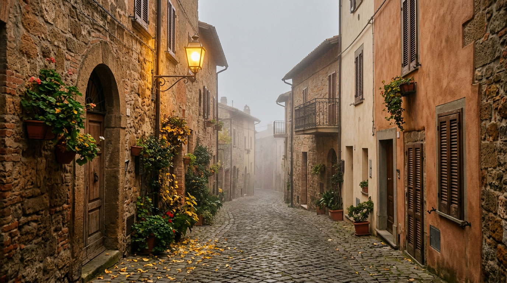

Castel Gandolfo a novembre — il borgo senza turisti.

Passate le folle dell'estate e le sagre d'autunno, Castel Gandolfo torna a essere quello che era prima della villeggiatura: un piccolo borgo sul ciglio di un cratere. Novembre è il mese giusto per vederlo così, con il lago velato di foschia, le piazze quiete e i musei del Papa visitabili senza code.
Il lago nella nebbia
Lo specchio d'acqua sta a 293 metri di quota, in fondo al cratere, ed è profondo fino a 168 metri. Il suo clima è molto umido e sensibilmente più freddo di quello del paese sovrastante, per effetto dell'inversione termica: per questo nelle mattine fredde la nebbia ristagna sull'acqua e si dirada solo con il sole (Wikipedia). Dal belvedere del centro storico lo spettacolo è quello di un catino bianco da cui affiorano, poco a poco, i boschi della sponda opposta.
Quando la foschia si alza si può scendere in riva. La strada lungolago percorre tutta la sponda settentrionale, dove si trovano gli impianti costruiti per le gare di canottaggio e canoa delle Olimpiadi di Roma del 1960; sulla sponda orientale un sentiero nel bosco passa accanto ai resti di una villa romana. Il perimetro del lago misura circa 10 chilometri (Wikipedia). In novembre conviene un paio di scarpe impermeabili: la sponda orientale è la più piovosa.
Il martedì del Papa
Da settembre 2025 Leone XIV ha preso l'abitudine di trascorrere a Castel Gandolfo il giorno di riposo settimanale, arrivando di norma il lunedì sera (La Croix). Proprio una sera di novembre, il 18 novembre 2025, uscendo da Villa Barberini, spiegò ai giornalisti come passa quelle ore: “un po' di lettura, un po' di lavoro”, la corrispondenza quotidiana, “un po' di tennis, un po' di nuoto” (EWTN News). I cronisti lo avevano atteso per ore sul marciapiede, nonostante il freddo e la nebbia che saliva dal lago (Religion Digital / EFE). La residenza resta riservata e l'agenda papale può cambiare, ma il martedì sera la piazza conserva un'atmosfera tutta sua.
“Una pausa durante la settimana che aiuta molto.”Leone XIV a Castel Gandolfo, 18 novembre 2025
Palazzo e giardini fuori stagione
Il Palazzo Apostolico e i giardini sono gestiti dai Musei Vaticani e si visitano solo con prenotazione (Ville Pontificie). In bassa stagione gli orari cambiano da giorno a giorno: il riferimento è il calendario ufficiale 2026-2027 del Palazzo Papale, che segnala anche i giorni di chiusura e ricorda che l'uscita dalle sale inizia mezz'ora prima dell'orario di chiusura (Musei Vaticani). Il 1° novembre, Ognissanti, è tra i giorni di chiusura dei Musei Vaticani (Musei Vaticani): meglio controllare prima di partire.
Il vantaggio di novembre è la calma. Le sale affacciate sul lago e il Giardino del Moro si attraversano senza gruppi numerosi, con la luce bassa del pomeriggio che entra dalle finestre. Nel percorso c'è anche la mostra permanente “Castel Gandolfo 1944” (Ville Pontificie), dedicata ai mesi in cui le Ville accolsero migliaia di sfollati: un racconto che il silenzio di novembre rende ancora più intenso. Anche il Borgo Laudato Si', con i suoi uliveti, accetta visite su prenotazione: orari e disponibilità vanno verificati sul sito ufficiale (Borgo Laudato Si').
Vino nuovo e fraschette
Novembre è anche il mese del vino nuovo. In Italia il vino novello può essere venduto dal 30 ottobre dell'anno della vendemmia (Wikipedia), e ai Castelli Romani il vino dell'annata ha una sua casa tradizionale: la fraschetta. Il nome viene dall'usanza di appendere una frasca sopra l'ingresso delle case dove si poteva bere il vino nuovo, portando da casa il cibo; oggi il cuore del fenomeno è la vicina Ariccia, dove alcune strade e una piazza sono dominate da questi locali, abbinati alla porchetta (Wikipedia).
Una giornata di novembre può dunque comporsi così: la mattina sul belvedere a guardare la nebbia sciogliersi, la visita al Palazzo a metà giornata, una passeggiata lungo il lago e la sera un bicchiere di vino dei Colli Albani nelle fraschette di Ariccia. Per arrivare senza auto e scegliere dove fermarsi, le nostre pagine pratiche raccolgono collegamenti e indirizzi.